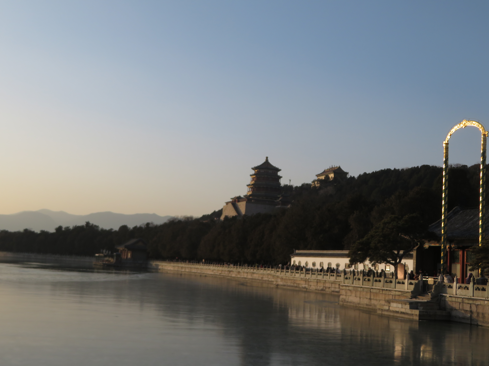

The Summer Palace is one of Beijing's most iconic attractions. Located in the northwestern part of the city, the palace was the historical summer home of the Chinese emperor. Now though, the palace is still beautiful in all times of the year, set right above the stunning Kunming Lake. The entire scenery of the park is breathtaking and is certainly a must-visit when you're in Beijing.
Both on my summer visit in 2023 (Top) and my winter visit in 2024 (Bottom), I had so many great experiences at the Summer Palace. Walking around the park exploring the stunning lakeside and temple views and relics of ancient China was so cool, and so was taking a boat onto the lake during the summer for some up close views of the massive temple and the 17-hole bridge (Top right), a must-do during that time of the year. In winter, seeing the lake freeze up turned the park into a winter wonderland, with a different but equally magical feeling around the Summer Palace. Ultimately, the Summer Palace is certainly worth a visit despite the crowds, with plenty of great things to see all the time.


The birdlife in Kunming Lake, the lake below the Summer Palace, is abundant, but my highlight has to be viewing these adorable ducklings on our boat ride while admiring the palace scenery. These cute baby ducklings would swim right up to the boat, giving me some epic shots of the baby bird and its mother as well as an absolutely unforgettable experience, making the already grand scenery of the Summer Palace even more awesome when visiting.